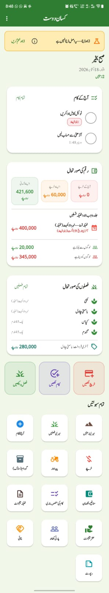

اسپانسر بنیں
کسان دوست پاکستانی کسان کی مفت، مکمل آف لائن ڈیجیٹل ڈائری ہے۔ آپ کی اسپانسرشپ اسے مفت رکھنے اور بہتر بنانے میں مدد دیتی ہے۔
کھیتی کا پورا حساب، ایک مفت ایپ میں
کسان دوست ایک اینڈرائیڈ ایپ ہے جو کسان کی کاپی اور رجسٹر کی جگہ لیتی ہے — سادہ اردو میں، بغیر انٹرنیٹ، بغیر کسی فیس کے۔

ایپ میں یہ سب شامل ہے
مفت رکھنا کیوں ضروری ہے؟
کسان کی جیب کا خیال
چھوٹے کسان کے لیے ہر روپیہ اہم ہے۔ ماہانہ فیس یا مہنگی ایپ اس کی پہنچ سے باہر ہوتی ہے — مفت ایپ ہر کسان تک پہنچتی ہے۔
بغیر رکاوٹ استعمال
نہ اکاؤنٹ، نہ لاگ اِن، نہ انٹرنیٹ کی شرط۔ کھیت میں سگنل ہو یا نہ ہو، ایپ چلتی ہے اور ڈیٹا فون میں محفوظ رہتا ہے۔
اعتماد کی بنیاد
جب ایپ مفت ہو تو کسان بے فکر ہو کر اپنا حساب لکھتا ہے۔ یہ اعتماد ہماری سب سے بڑی دولت ہے، اور اسپانسرشپ اسے قائم رکھتی ہے۔
اسپانسرشپ سے کیا مدد ملے گی
آپ کا تعاون براہِ راست ایپ اور کسانوں کی خدمت میں لگے گا۔
ایپ کی بہتری
نئی خصوصیات، غلطیوں کی درستگی، اور ہر ورژن کی جانچ — تاکہ ایپ ہر فون پر درست چلے۔
اردو دستاویز
سادہ اردو میں رہنمائی، تربیتی مواد اور ہر اسکرین کی وضاحت — تاکہ کم پڑھا لکھا کسان بھی ایپ سمجھ سکے۔
کسانوں کی تربیت
ورکشاپس، ڈیمو سیشن اور فیلڈ عملے کی تربیت — تاکہ ایپ صرف انسٹال نہ ہو، استعمال بھی ہو۔
پہنچ اور تقسیم
دور دراز علاقوں تک ایپ پہنچانا، مقامی زبانوں میں آگاہی، اور کسان تنظیموں سے رابطہ۔
اپنے مطابق زمرہ چنیں
یہ تجویز شدہ زمرے ہیں — حتمی شرائط ہر پارٹنر کے ساتھ الگ سے طے ہوں گی۔ کوئی قیمت پہلے سے طے نہیں کی گئی۔
کمیونٹی سپورٹر
مناسب برائے: چھوٹے مقامی زرعی کاروبار (بیج، کھاد، سپرے، آلات کی دکانیں)، مقامی تاجر، اور وہ افراد جو مفت ایپ کی حمایت کرنا چاہتے ہیں۔
- ویب سائٹ کے اسپانسر حصے میں نام یا لوگو کی شمولیت (صرف اجازت سے)
- ماہانہ امپیکٹ رپورٹ میں شکریے کے ساتھ تسلیم
- اسپانسرشپ سرٹیفکیٹ / ڈیجیٹل شکریہ نوٹ (PDF)
زرعی تعلیمی پارٹنر
مناسب برائے: زرعی ادارے، این جی اوز، کسان تنظیمیں، تعلیمی ادارے، زرعی ترقیاتی پروگرام — جو کسانوں کی تربیت یا صلاحیت سازی میں حصہ لینا چاہتے ہیں۔
- تربیتی مواد اور ڈیمو سیشنز میں مشترکہ تعاون
- کسانوں کے لیے تعلیمی ریسورسز کی مشترکہ تیاری (ایپ کے ڈیمو موڈ پر مبنی)
- ویب سائٹ اور رپورٹس میں لوگو اور برانڈ کی شمولیت (صرف اجازت سے)
- مشترکہ تربیتی ورکشاپس میں نامزدگی
ڈیولپمنٹ اسپانسر
مناسب برائے: وہ ادارے اور کمپنیاں (سیڈ کمپنیز، فرٹیلائزر بزنس، ایگری ایکوپمنٹ سپلائرز، سائل ٹیسٹنگ سروسز، بڑی این جی اوز) جو ایپ کی مزید ترقی اور نئی خصوصیات کی فنڈنگ کرنا چاہتی ہیں۔
- پروڈکٹ روڈ میپ پر مشاورتی رائے (حتمی فیصلہ ڈویلپر کا رہتا ہے)
- نئی خصوصیات کی تجویز کا حق (ترجیح یا ٹائم لائن کی ضمانت نہیں)
- تفصیلی ماہانہ امپیکٹ اور مالی رپورٹنگ
- ویب سائٹ اور تمام عوامی رپورٹس میں نمایاں تسلیم (صرف اجازت سے)
واضح بات — کیا وعدہ نہیں کیا جاتا
اسپانسرشپ سے ڈاؤن لوڈ یا فروخت کی کوئی ضمانت نہیں ملتی۔ کسانوں کے ڈیٹا یا رابطوں تک کوئی رسائی نہیں دی جاتی، اور پیسے کے بدلے ایپ میں کوئی تجارتی ترجیح نہیں خریدی جا سکے گی۔ ایپ کے اندر اشتہار یا پروموشن نہیں، اسپانسر کی مرضی کی فیچر کی ضمانت شدہ ڈیلیوری نہیں، اور ایپ کے ڈیزائن، پرائیویسی پالیسی یا مفت ماڈل پر اسپانسر کو کوئی ویٹو نہیں۔ مکمل تفصیل شفافیت پالیسی میں پڑھیں۔
جو ہر اسپانسر کو ضرور ملتا ہے: ماہانہ امپیکٹ رپورٹ (آمدن، اخراجات، تیار شدہ کام)، ہر تعاون اور ہر خرچ کا ریکارڈ رسیدوں کے حوالے کے ساتھ، اور فنڈ شدہ کام کی تکمیل کی دستاویز۔